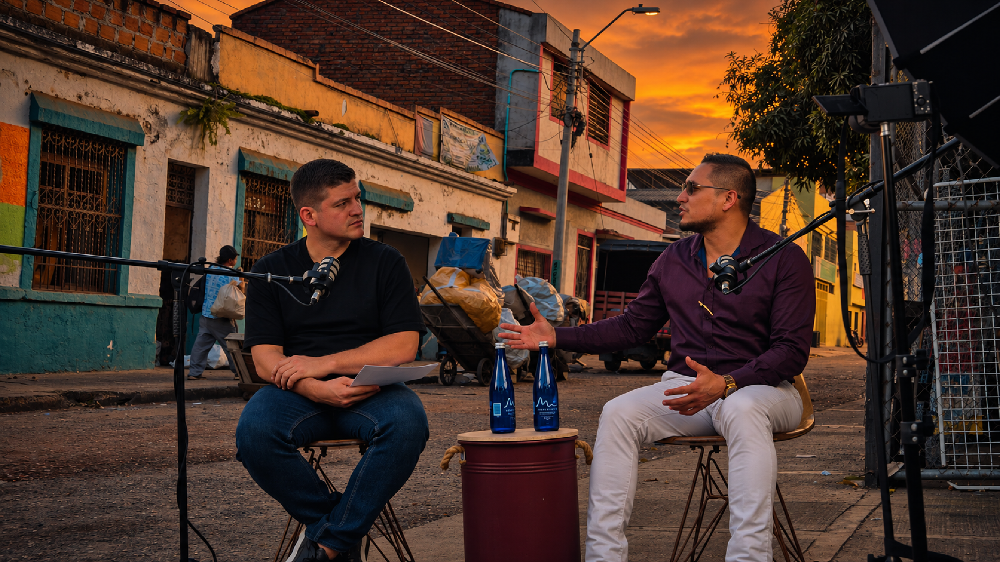
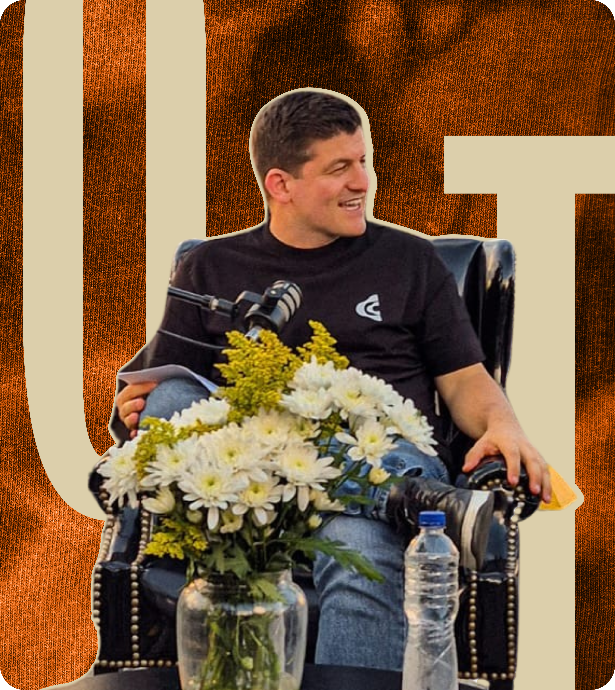
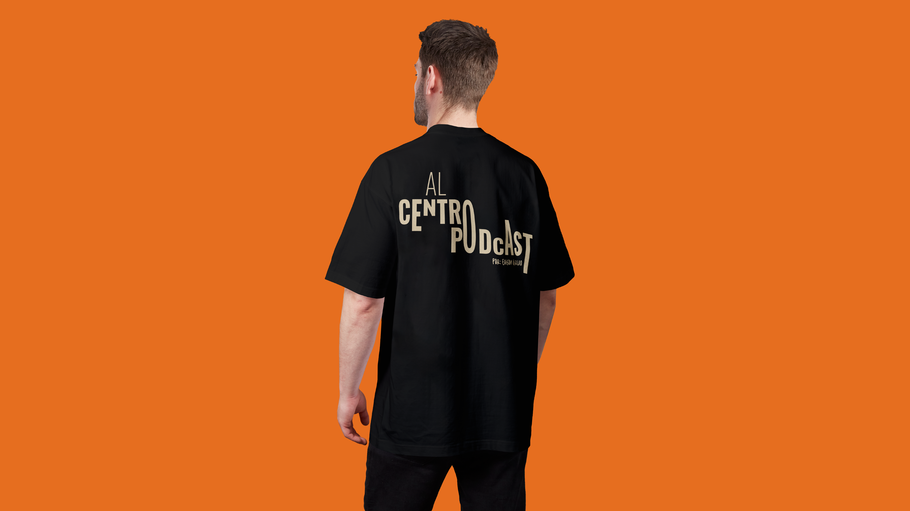

All work
Visual identity · 2024
Al Centro Podcast
An identity for a podcast about the people and organizations moving downtown Cali forward.
- Discipline
- Visual identity
- Client
- Cali City Council
- Year
- 2024
- Role
- Visual identity, promotional graphics
- Tools


Brief
Al Centro Podcast highlights people and organizations with a real impact on downtown Cali, focusing on the economic, cultural and social movement around the city center. Each episode is recorded in a different urban setting connected to downtown.
Approach
A brand that reflects the essence, diversity and energy of the area. Stacked, playful lettering sits over street photography, and oversized letterforms frame guests, so every cover, thumbnail and shirt reads as part of the same city.
Result
A contemporary identity applied across episode covers, video thumbnails, merchandise and outdoor mockups.
Palette
- #E86D1F
- #161616
- #DCCFAB




PODCAST EPISODES
01 / 04